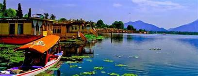
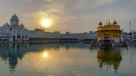
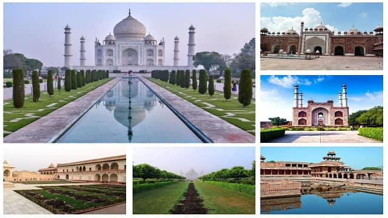
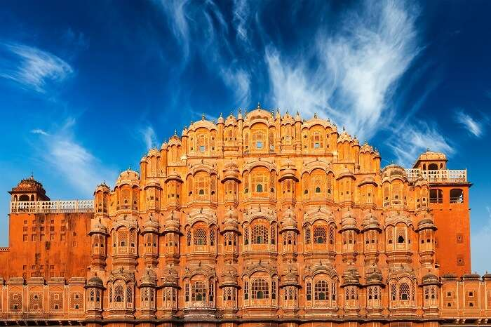
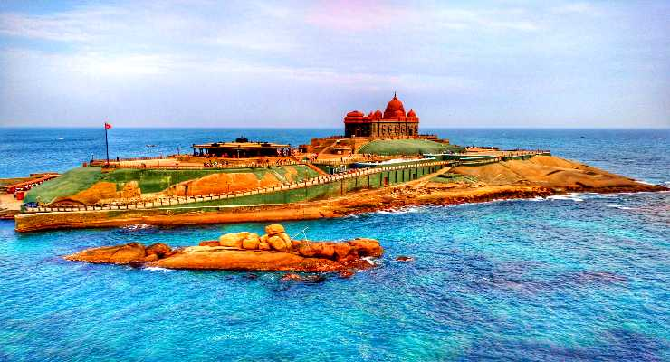

Jammu&Kashmir
Jammu and Kashmir is a state in northern India, often denoted by the acronym J&K. It is located mostly in the Himalayan mountains, and shares borders with the states of Himachal Pradesh and Punjab to the south. Points of interest
-Ladakh
-Vaishno Devi
-Amarnath Temple

Amritsar
Amritsar (also called Ambarsar) is a city in the northwestern Indian state of Punjab, not far from the border with Pakistan. At the center of its walled old town is the gilded Golden Temple (Harmandir Sahib), considered the holiest gurdwara, or religious complex, of the Sikh religion. It is at the end of a causeway, surrounded by the sacred Amrit Sarovar lake, where pilgrims bathe.
-Harmandir Sahib
-Jallianwala Bagh

Agra
Agra, a city in northern India Uttar Pradesh state, is home to the iconic Taj Mahal, a mausoleum built for the Mughal ruler Shah Jahans wife, Mumtaz Mahal, who died in childbirth in 1631. Set behind a reflecting pool inside a courtyard defined by 4 minarets, the imposing main building features a massive dome and intricately carved white marble inlaid with precious stones.
-Taj Mahal
-Tomb of Itimad ud Daulah
-Mehtab Bagh

Rajasthan
Rajasthan is a northern Indian state bordering Pakistan. Its palaces and forts are reminders of the many kingdoms that historically vied for the region. In its capital, Jaipur, are the 18th-century City Palace and Hawa Mahal, a former cloister for royal women, fronted by a 5-story sandstone screen. Amer Fort, atop a nearby hill, was built by a Rajput prince in the 1600s. Colleges and Universities: University of Rajasthan, more
-Ranthambore National Park
-Amer Fort

Kanyakumari
Kanyakumari is a coastal town in the state of Tamil Nadu on India's southern tip. Jutting into the Laccadive Sea, the town was known as Cape Comorin during British rule and is popular for watching sunrise and sunset over the ocean. It's also a noted pilgrimage site thanks to its Bagavathi Amman Temple, dedicated to a consort of Shiva, and its Our Lady of Ransom Church, a center of Indian Catholicism.
-Vivekananda Rock Memorial
-Thiruvalluvar Statue
-Padmanabhapuram Palace